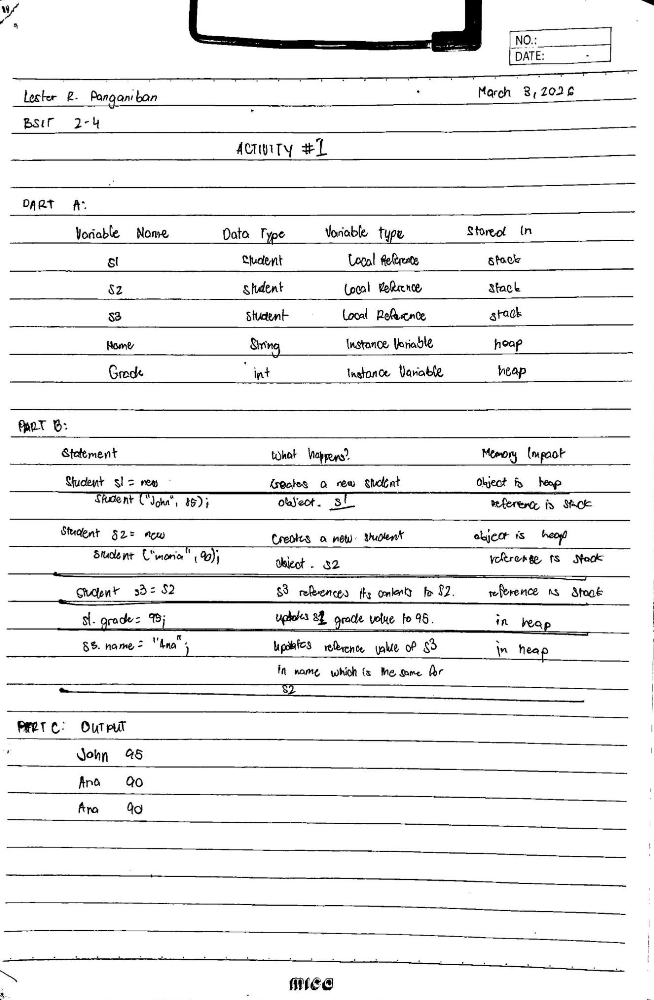

Academic Period
Midterm Outputs
A collection of work submitted during the midterm period of OOP.

Manually tracing how objects like s1, s2, and s3 interact in memory was a real eye-opener for understanding reference variables. Identifying which data stays in the stack versus the heap helped clarify why changing a value through one reference can sometimes affect another. Completing the memory impact tables made abstract concepts of object instantiation and variable assignment feel much more concrete.
Java
Activity1.java
public class subTotal {
private int productValue;
private boolean couponSwitch;
public subTotal (int productValue, int productAmount, boolean couponSwitch) {
this.productValue = productValue*productAmount;
if (productValue > 50) {
this.productValue = this.productValue++ + ++this.productValue; // add tax
}
else if (productValue < 50) {
this.productValue = this.productValue-- + --this.productValue; // add discount
}
if (productValue > 20) { // coupon eligibility
this.couponSwitch = true;
}
else {
this.couponSwitch = false;
}
}
public void displayReciept () { // displays the total for each
System.out.println(productValue + "," + couponSwitch);
}
public void addAmount (int amountAdd) { // adds amount to total
this.productValue += amountAdd;
}
public void subtractAmount (int amountSubtract) { // subtracts amount to total
this.productValue -= amountSubtract;
}
public void resetTotal() { // resets the total amount
this.productValue = this.productValue ^ this.productValue;
}
public static void main(String[] args) {
subTotal c1 = new subTotal (100, 2, false);
subTotal c2 = new subTotal (10, 1, false);
subTotal c3 = new subTotal (25, 9, false);
subTotal c4 = new subTotal (4, 1, false);
subTotal[] customers = {c1, c2, c3, c4};
c1.addAmount(100); // c1 decided to add products
c3.subtractAmount(9); // c3 took away products
c2.subtractAmount(6); // c2 took away products
c4.subtractAmount(3); // c4 took away products
for (subTotal current : customers) {
if (current.productValue <= 5) {
current.resetTotal();
}
}
System.out.println("Subtotals " + "-" + " with Coupons");
c1.displayReciept();
c2.displayReciept();
c3.displayReciept();
c4.displayReciept();
}
}
This activity pushed my understanding of Java's diverse operator set, particularly with the more "tricky" bitwise and ternary expressions. Managing assignment and unary operators in complex statements like a++ + ++a required a high level of focus to ensure the output matched the expected logic exactly. It was a comprehensive exercise that reinforced the importance of operator precedence and the specific behavior of different data types during computation.
Java
Activity1.java
import java.util.Scanner;
public class ATMWithdrawalLimit {
public static void main(String[] args) {
Scanner input = new Scanner(System.in);
int initialBalance = 9000;
int choice = 0;
int deposit = 0;
int withdraw = 0;
do {
System.out.println("===== ATM MENU =====");
System.out.println("1. Check Balance");
System.out.println("2. Deposit");
System.out.println("3. Withdraw");
System.out.println("4. Exit");
System.out.println("Enter choice: ");
choice = input.nextInt();
switch (choice) {
case 1:
System.out.println("Your remaining balance is: " + initialBalance);
break;
case 2:
System.out.println("Input deposit amount: ");
deposit = input.nextInt();
if (deposit > 0) {
initialBalance += deposit;
System.out.println("Your new balance is: " + initialBalance);
}else {
System.out.println("Invalid Input");
break;
}
break;
case 3:
System.out.println("Input withdrawal amount: ");
withdraw = input.nextInt();
if (withdraw > 3000) {
System.out.println("Withdrawal Limit Exceeded");
break;
}else {
initialBalance -= withdraw;
System.out.println("Your new balance is: " + initialBalance);
}
break;
case 4:
System.out.println("Exiting program...");
break;
}
} while (choice != 4);
}
}
This project was a great practical application of using switch statements and do-while loops to create a functional user interface. Implementing the 3,000-peso withdrawal limit taught me how to integrate specific business rules directly into the program logic using if-else structures. It was satisfying to see the theoretical concepts of control flow come together in a simulation that mirrors a real-world system.
Java
Activity1.java
import java.util.Scanner;
public class StudentPaymentSystemPanganiban {
public static void main(String[] args) {
Scanner input = new Scanner (System.in);
String studentName = "";
int studentID = 0;
int totalTuition = 0;
int choice = 0;
int payment = 0;
int counter = 0;
int discountCheck = 0;
int discount = 0;
System.out.println("Input Student Name: ");
studentName = input.nextLine();
System.out.println("Input Student ID: ");
studentID = input.nextInt();
System.out.println("Input Tuition amount: ");
totalTuition = input.nextInt();
do {
System.out.println("===== PAYMENT MENU =====");
System.out.println("1. Pay Tuition");
System.out.println("2. Check Balance");
System.out.println("3. Apply Discount");
System.out.println("4. Exit");
System.out.println("Enter choice: ");
choice = input.nextInt();
switch (choice) {
case 1:
System.out.println("Input payment amount: ");
payment = input.nextInt();
if (payment > totalTuition) {
System.out.println ("Invalid payment");
}else {
totalTuition -= payment;
System.out.println("Success!");
if (totalTuition == 0) {
System.out.println("Success! No remaining balance");
}
}
++counter;
break;
case 2:
System.out.println("Your balance amount: " + totalTuition);
++counter;
break;
case 3:
if (discountCheck == 0) {
System.out.println("Are you a Regular Student(1) or a Scholar(2): ");
discount = input.nextInt();
if (discount == 1) {
System.out.println("No discount applied");
}else if (discount == 2) {
System.out.println("Discount applied");
totalTuition -= (totalTuition * 0.20);
}
}else {
System.out.println("You have already claimed the discount");
}
break;
case 4:
System.out.println("Student Name: " + studentName);
System.out.println("Total Transactions: " + counter);
System.out.println("Final Balance: " + totalTuition);
System.out.println("Exiting program...");
break;
}
}while (choice != 4);
}
}
Developing this system helped me understand how to manage more complex state transitions, like tracking transaction counts and preventing multiple discount applications. Using nested if statements for input validation ensured the program remained robust, especially when handling financial calculations like tuition balances. The requirement to handle different student roles, such as scholars versus regular students, added a layer of logic that made the coding process much more engaging.
Java
Activity1.java
package activities;
import java.util.Scanner;
public class ExpenseTrackerPanganiban {
public static int computeExpenses(int transportation, int food, int electricity, int other) {
return (transportation + food + electricity + other);
}
public static String exceedChecker(int total, int budget) {
if (total > budget) {
return "The budget cannot hold expenses";
}
else {
return"The budget can accomodate the expenses!";
}
}
public static void displayTitle() {
System.out.println("Personal Expense Tracker");
}
public static void displayTotal(int totalExpense, int budgetStatus, int remainingBudget) {
System.out.println("Your total expenses is: " + totalExpense);
System.out.println("Your total budget is: " + budgetStatus);
System.out.println("Your remaining budget is: " + remainingBudget);
}
public static void main(String[] args) {
Scanner input = new Scanner(System.in);
int budget = 0;
int transportation = 0;
int food = 0;
int electricity = 0;
int other = 0;
int total = 0;
int remainingBudget = 0;
displayTitle();
System.out.println("Please input your budget: ");
budget = input.nextInt();
System.out.println("=== Expenses ===");
System.out.println("Transportation:");
transportation = input.nextInt();
System.out.println("Food:");
food = input.nextInt();
System.out.println("Elextricity:");
electricity = input.nextInt();
System.out.println("Other expenses:");
other = input.nextInt();
total = computeExpenses(transportation, food, electricity, other);
System.out.println(exceedChecker(total, budget));
remainingBudget = budget - total;
displayTotal(total, budget, remainingBudget);
}
}
Focusing on modularity through user-defined methods made this activity stand out, as it forced me to think about how information flows between void and non-void functions. Calculating expenses and comparing them against a budget taught me how to return meaningful strings and data back to the main method for a clean final output. Adding personal enhancements, like tracking extra categories or calculating the remaining budget, allowed me to put a unique spin on the assignment.
This seatwork was a real test of logic, specifically in distinguishing how the timing of prefix and postfix operators affects a variable's value in real-time. Manually tracing the outputs taught me to be more meticulous with how I read expressions, as even a single ++ or -- position can completely change the final result. It was a challenging but necessary exercise to sharpen my debugging skills and mental execution of Java code.
Writing out logic by hand forced me to think through the structure of if-else blocks and switch statements without the safety net of an IDE's auto-correct. It deepened my understanding of how to control program flow effectively, ensuring that every possible condition is accounted for and logically sound. This exercise really emphasized the importance of planning out my codes decision-making process before I even touch a keyboard.
Pending
This quiz output has not been uploaded yet.
Pending
This quiz output has not been uploaded yet.
Pending
This quiz output has not been uploaded yet.
Pending
This quiz output has not been uploaded yet.

.png)
.png)
Diving into the distinctions between the JDK, JRE, and JVM provided a necessary roadmap for how our development environment actually functions. Learning about Java’s key features, like its robust security and object-oriented nature, highlighted why it’s so effective for building scalable applications. It was a great way to ground our theoretical knowledge before moving into more complex coding implementations.

Reflecting on my own identity through this activity helped me see how my experience in graphic design and visual arts can complement my technical path. It gave me a chance to express my specific excitement for upcoming topics while establishing a direct line of communication with the professor. Overall, it was a helpful exercise in aligning my personal interests with my academic goals for the semester.
Pending
Exam output has not been uploaded yet. Check back soon.